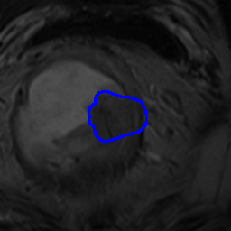

Hi, Hugo!
Hello, Hugo!
这是第一篇内容！将原来的笔记从 Jellky 全部转移至 Hugo。下面是一些关于这个新站点建立时的笔记。
Hugo 默认是使用 TOML，现在将此更改为更易阅读的 YAML。 Hugo 需要在源目录查找一个
config.toml的配置文件。如果这个文件不存在，将会查找config.yaml，然后是config.json
添加站内搜索 Search Page
全局文章内容搜索，从关键字快速定位到文章。
Hogu 文档：https://adityatelange.github.io/hugo-PaperMod/
PaperMod uses Fuse.js Basic for seach functionality
Add the following to site config, config.yml
outputs:
home:
- HTML
- RSS
- JSON # is necessary
Create a page with search.md in content directory with following content
---
title: "Search" # in any language you want
layout: "search" # is necessary
# url: "/archive"
# description: "Description for Search"
summary: "search"
---
To hide a particular page from being searched, add it in post’s fron’t matter
---
searchHidden: true
copy
ex: [search.md]
添加 Archives 功能
这是自动的，只需要添加一个按钮，其他的就不用管了。
https://adityatelange.github.io/hugo-PaperMod/posts/papermod/papermod-features/
增加公式支持
此功能会拖慢网站的加载速度，这个以后再说！些许的加载时间能换取良好的阅读体验，目前来看是值得的。我的论文阅读笔记里充斥了大量的 LaTeX 公式。
公式支持基于 MathJax。
https://mertbakir.gitlab.io/hugo/math-typesetting-in-hugo/
行内公式：
给定一组训练样本 $\mathcal{D}$，TumorCP 有 $(1 - p_{cp})$ 的概率不执行任何操作；有 $p_{cp}$ 的概率从 $\mathcal{D}$ 中采样出一个对图像 $(x_{src}, x_{tgt}) \sim \mathcal{D}$，并执行一次 “Copy-Paste”。
令 $\mathcal{O}{src}$ 为图像 $x{src}$ 上肿瘤集合，$\mathcal{V}{tgt}$ 为 $x{tgt}$ 上的器官的体积坐标集合，$\mathcal{T}$ 是一组随机数据转换，每个转换都有一个称为 $p_{trans}$ 的概率参数。
一次 “Copy-Paste” 流程：
- TumorCP 首先采样一个肿瘤 $o \sim \mathcal{O}{src}$、一组数据转换 $\tau \sim \mathcal{T}$ 和一个目标位置 $v \sim \mathcal{V}{tgt}$；
- 然后将 $τ(o)$ 以 $v$ 为中心，取代原始数据和标注。
行间公式：
$$\sqrt{x} + \sqrt{x^{2}+\sqrt{y}} = \sqrt[3]{k_{i}} - \frac{x}{m}$$
测试 Emoji
🧡💥💢💌💝🕎☪
测试代码
import sys
from PyQt5 import QtCore, QtGui, QtWidgets, uic
from PyQt5.QtCore import Qt, QEvent
import random
from PyQt5.QtGui import QPixmap
from PyQt5.QtWidgets import QAction, QFileDialog
class Canvas(QtWidgets.QLabel):
def __init__(self, parent=None):
super().__init__(parent)
self.background = QPixmap(200, 200)
self.background.fill(Qt.yellow)
# self.clear(Qt.yellow)
self.last_x, self.last_y = None, None
self.pen_color = QtGui.QColor('#000000')
self.setPixmap(self.background)
def mouseReleaseEvent(self, e):
self.last_x = None
self.last_y = None
图片的显示
这里需要将图片拷贝的 public 对应的文章目录下，使用原本的相对路径。
使用 hugo 生成文章的 HTML 文件后，每一篇文章都会以 Markdown 文件中的 title 生成一个文件夹。如本篇文章的文件夹名称为 first-post （全小写）。
在访问时，使用的是如下的链接：
https://landodo.github.io/first-post/0000465981_017.jpg

如果图片实现依旧不正常，使用 F12 进行调试，快速定位问题所在。